Не просто надпись: в каждом есть образ — ноготь, кисть, капля лака, флакон. Справа — значок для аватарки и иконки сайта.
Пять ногтей складываются в цветок, один — фуксия. Узнаваемый знак без слов: красиво на вывеске, пакетах и аватарке.
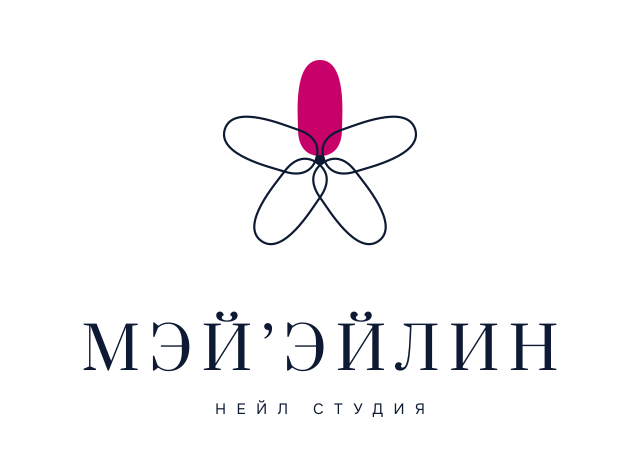
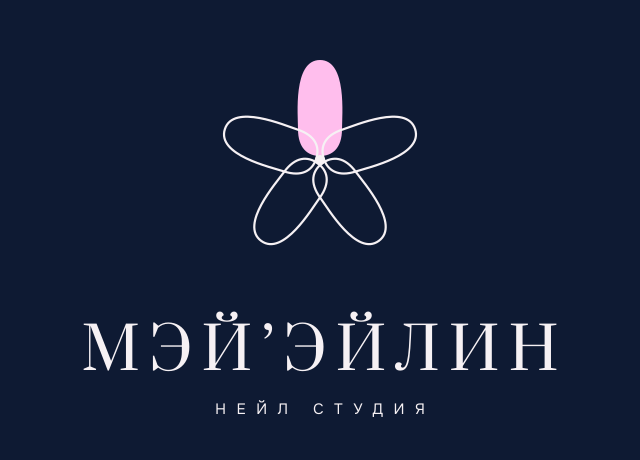
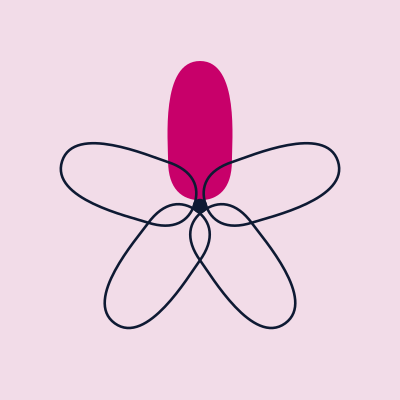
Кисть мастера роняет каплю лака — она же становится апострофом в имени. Живо и про профессию.
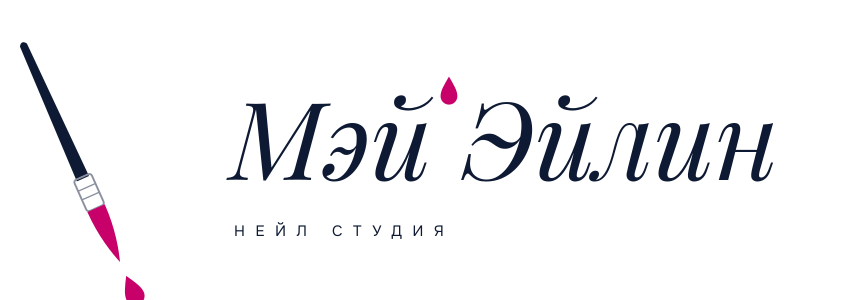
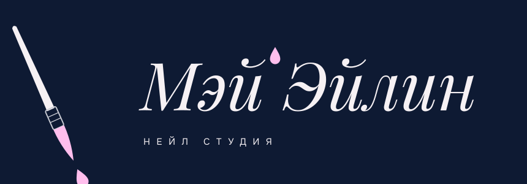
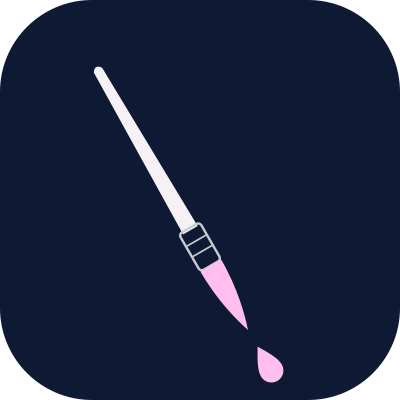
Ноготь с «лункой» — классика маникюра, понятная каждой клиентке. Минимализм и спокойная роскошь.
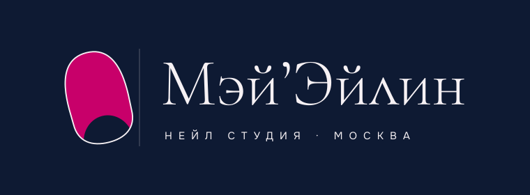
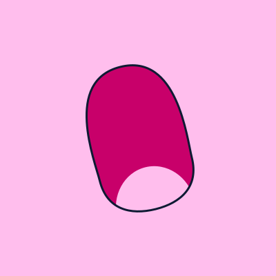
Два ногтя образуют букву «М» — монограмма Мэй’Эйлин. Один контурный, второй залит фуксией.
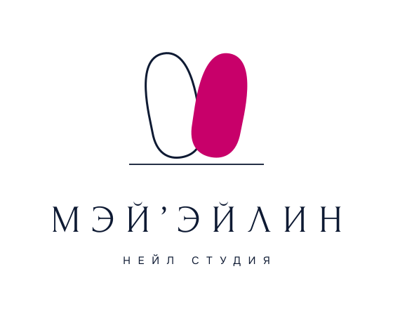
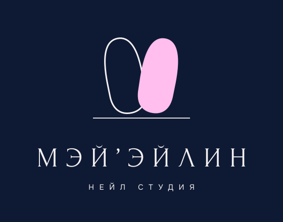
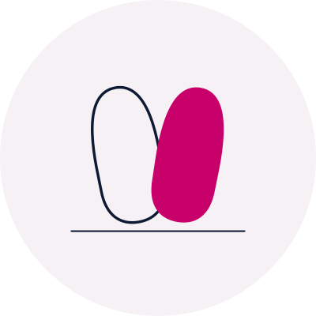
Силуэт флакона лака и подпись-росчерк. Нежно, женственно, легко узнать в ленте.
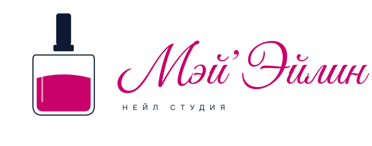
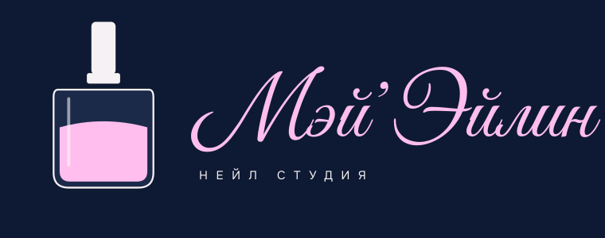
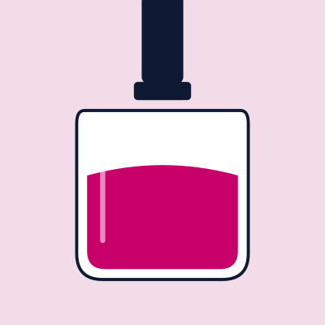